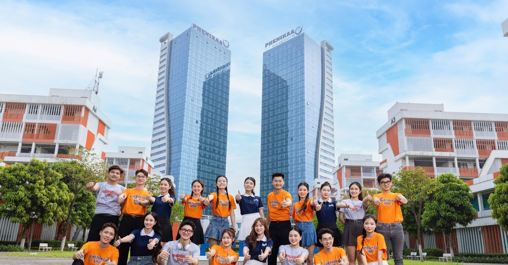

10/10/2007: Trường được thành lập theo Quyết định của Thủ tướng Chính phủ, với tên gọi ban đầu là Trường Đại học Thành Tây.
21/11/2018: Trường chính thức được đổi tên thành Trường Đại học Phenikaa, đánh dấu một bước ngoặt lớn với sự đầu tư mạnh mẽ từ Tập đoàn Phenikaa.
Tổng Giám đốc Đại học Phenikaa: PGS.TS. Hồ Xuân Năng. Ông đồng thời là Chủ tịch Hội đồng Trường và là Chủ tịch của Tập đoàn Phenikaa.
Hiệu trưởng Đại học Phenikaa: GS.TS. Phạm Thành Huy.
Các chương trình đào tạo:
 >
>
>